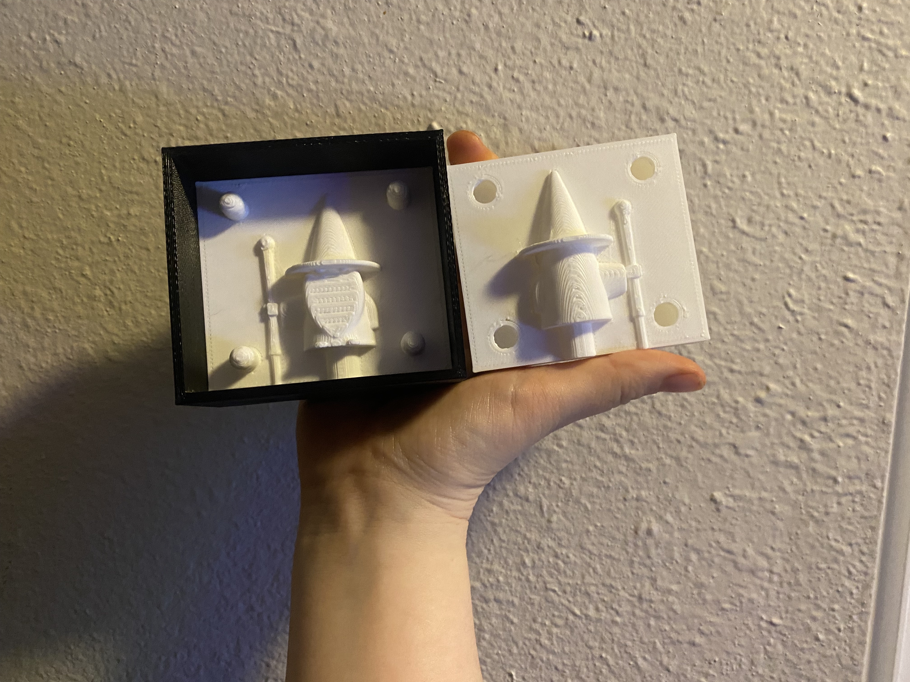
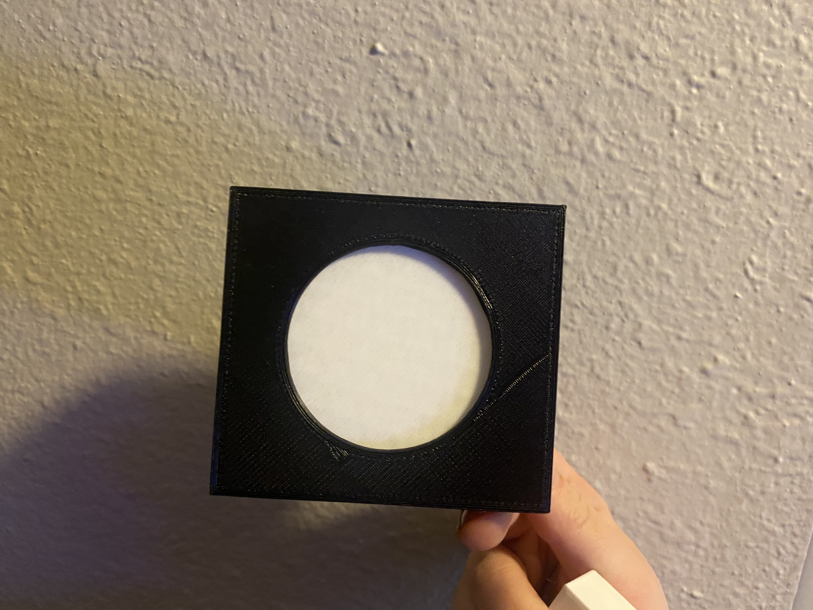
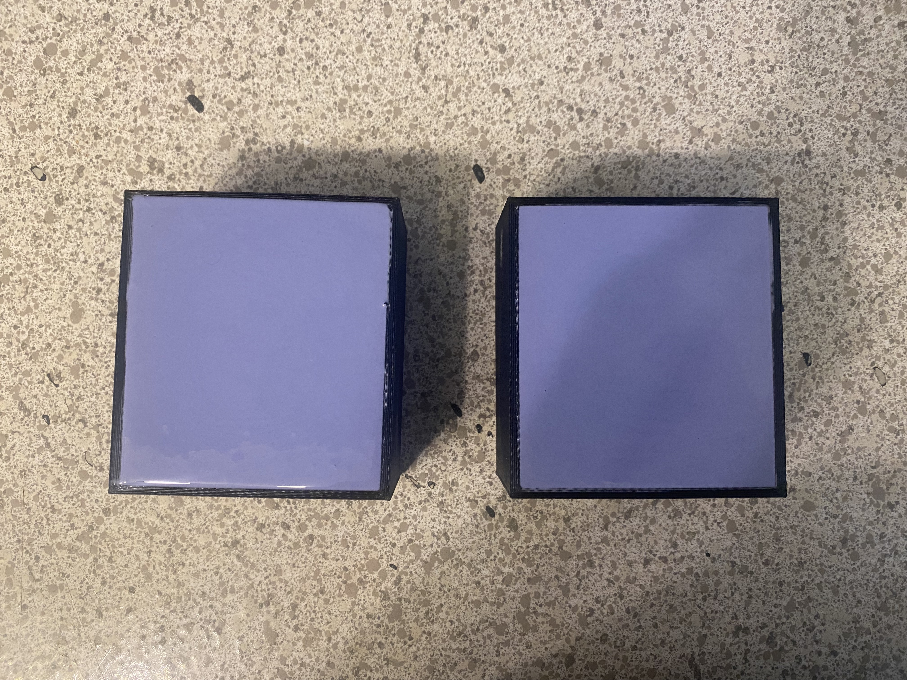
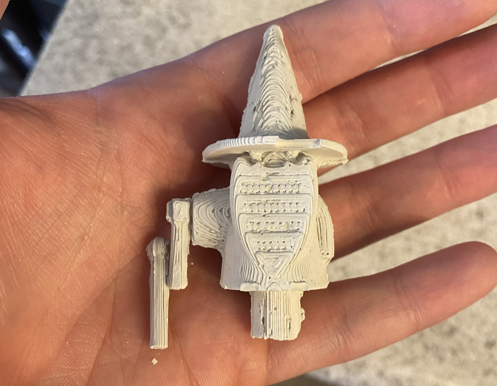
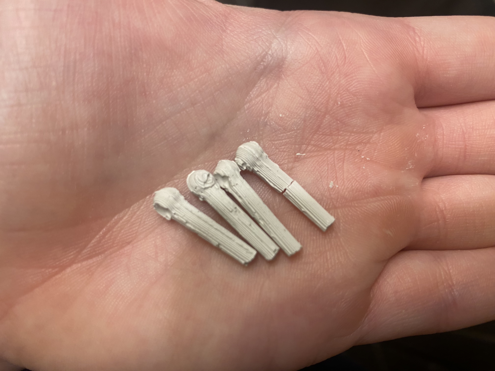

A7: Molding and Casting!
By Jessica Hord

Documentation
I wanted to do something a little more challenging, but also cute, so I selected this wizard.
I stayed after class and ran my rough Rhino build by Nadya to make sure I was thinking about it correctly. After she approved it, I finished it up at home making sure everything was exact. I designed the mold parts seperately from the box and designed the box like a cake pan so that I can easily push the pieces out.

I printed them after many, many issues with my printer. My lamp was fine even though it was large, but something changed and I've been having a ton of issues. I think I have it ironed out now, but I had to change the nozzle.
I printed the "pan" part of my 3D mold in a different color so it would be easy to tell them apart.


I mixed the oomoo and made my mold.

The next day I cast my PerfectCast into it. It worked well, but the staff broke when I took it out and the hat was missing some of the plaster.

I tried shaking it more to get it more into the hat brim, but it didn't work. I also tried taking the staff out more gently and that also didn't work.
I had an idea to take the plaster and put some into the brim first, put it together, and then cast. This worked!

However, even though the staffs were casting fine, they broke everytime I took them out of the mold.

I sanded them down, leaving a lot of the texture because I like it. I might glue the staffs back on at some point, but right now I just wanted to make them identical.
Things I Learned about Molding/Casting
1. If you are making a lot of these, it would be worth having two oomoo molds to cast plaster into.
2. Smooth 3D print = Smooth plaster cast. Texture 3D print = Textured 3D cast. If I did this again (and had more time/less printer issues), I would print it with a smaller tolerance and slower speed so that the 3D mold was super smooth. Then add texture in the final piece. Doing it the way I did leads to more air bubbles.
3. You can add some plaster to the deep sections of your mold if it's not coming out right.
4. Plaster is easy to sand and work with after the fact! I really like it as a material.
Thank yous!
Nadya for the help with where to put the pour holes and keys.
Source Files
Wizard DownloadFull Rhino File (All Pieces)
Wizard Female Mold STL
Wizard Male Mold STL
Male and Female Molds Cura File
Male and Female Molds gCode
Box for Molds STL
Box Cura File
Box gCode